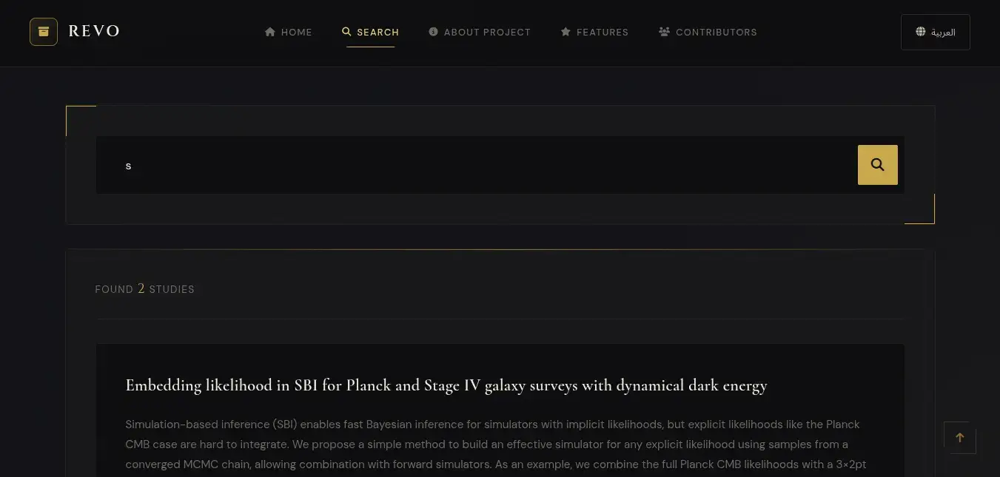
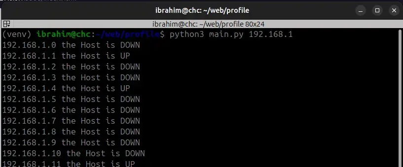
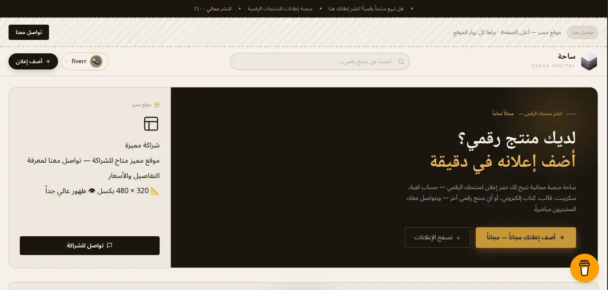
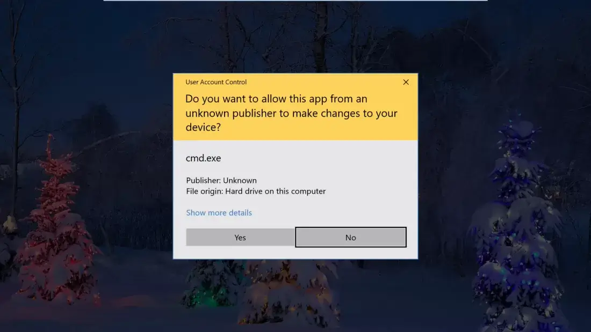
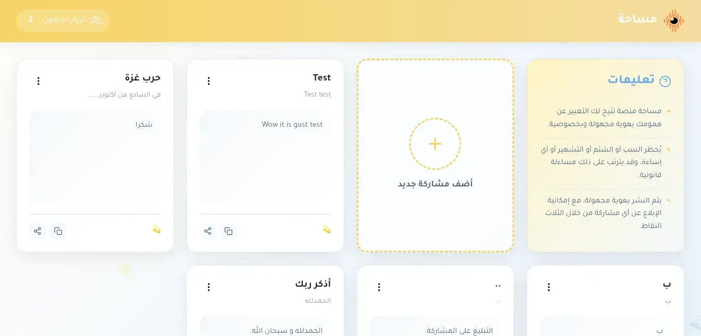

Foundation Year — Cybersecurity
Backend Developer • Software Programmer • Ethical Hacking Enthusiast Passionate about building scalable backend systems, developing desktop applications, and continuously expanding my knowledge in cybersecurity and modern technologies.
01 — About
I'm a foundation-year computer science student with a deep passion for software development and cybersecurity. My journey started through self-learning, online courses, and building real projects.
I enjoy building websites and tools that solve real problems. I'm also fascinated by ethical hacking and how systems work securely — understanding how things break helps you build them better.
Most of what I know, I taught myself. I believe continuous self-improvement and hands-on practice are the foundation of a great technology career.
02 — Currently Learning
I believe continuous learning and hands-on practice are the foundation of great technology careers.
03 — Skills
04 — Projects

Web DevArchival Studies: A web platform that allows users to search for and access a wide variety of studies across different fields. The front end was developed using HTML, CSS, and JavaScript, while the back end was built using Node.js with a PostgreSQL database. The database is managed through a Discord bot developed using the discord.js library, with the goal of improving efficiency and reducing server resource usage.

SecurityA Python CLI tool that analyzes password strength using entropy calculation, common pattern detection, and security scoring.

Web DevSaha is a free platform that allows users to publish listings for their digital products, such as game accounts, scripts, templates, eBooks, and other digital assets, while enabling buyers to contact sellers directly. The platform was developed using HTML, CSS, and JavaScript, with Firebase used for data storage and management.

SecurityA script used to gain system administrator privileges without authorization and by force, developed in C.

Web DevA safe space that allows you to express your thoughts, concerns, and personal experiences anonymously, while maintaining the highest levels of privacy and confidentiality. The platform is developed using modern web technologies, including HTML, CSS, and JavaScript, with Firebase used for secure and efficient data management and storage.
06 — Contact
Have a project, want to collaborate, or just want to say hello — I'd love to hear from you.